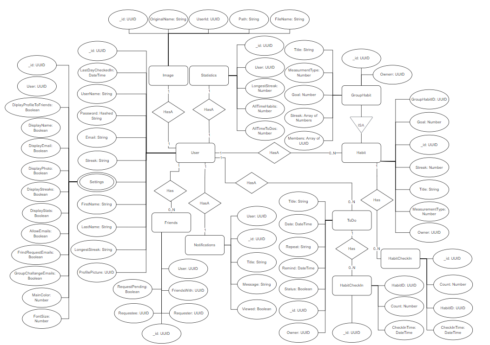

I worked with 6 other group members to create a mern stack habit tracking app. We use the agile software development model for creating this app,
and had one weekly scrum meeting instead of daily ones since we had other schoolwork on top of this project.
The parts of the app that I worked on include:
database design and setup
backend login and signup functionality
backend email sending functionality
backend user profile functionality
backend challange functionality
backend notification functionality
backend leaderboard functionality
backend automated testing
various bug fixes
ER Diagram

App Demo Video
Additionally if you are interested, here is a video that one of the team members created, going over the funtionality of our habit tracking app.